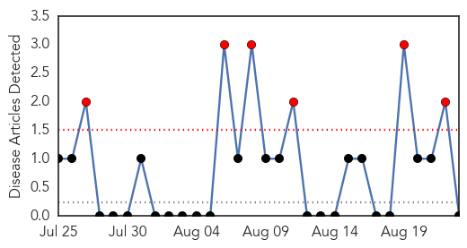

Bubonic Plague
30-Day Web Trend
6 alerts, 0 warnings

30-Day Twitter Trend
0 alerts, 0 warnings

Article Locations

Article Confidences

Top Articles:
-
No articles found for Aug 23, 2015
Top Tweets:
-
No tweets found for Aug 23, 2015
MERS
30-Day Web Trend
1 alerts, 0 warnings

30-Day Twitter Trend
2 alerts, 0 warnings

Article Locations

Article Confidences

Top Articles:
Top Tweets:
- 0.611
- AFD Blog `Referral: @MackayIM On The Spread Of MERS-CoV' http://t.co/JgjQquaEXV
- 0.597
- AFD Blog `Saudi MOH: Riyadh MERS Cluster Adds 6 More Cases' MERS-CoV http://t.co/GkC7KHu92t
- 0.566
- AFD Blog `Saudi MOH Statement On The Riyadh MERS Outbreak – Aug 23rd' MERS-CoV http://t.co/lTlAHqBEOY